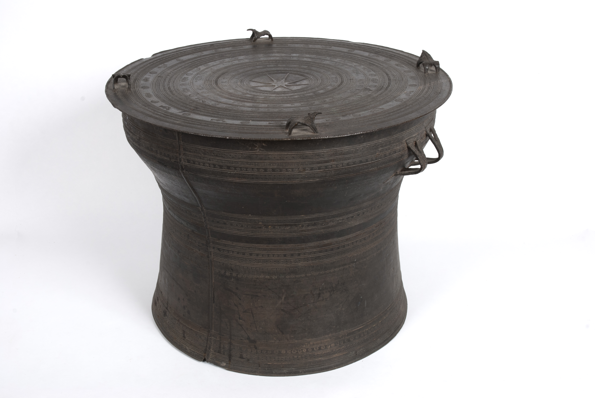
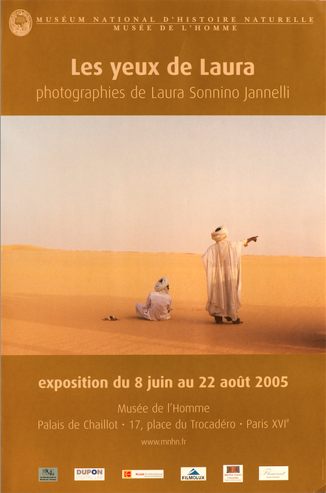

2. L'enrichissement des collections
C'est la seconde mission de l'association.
Elle l'a remplie dés sa création et cette activité n'a cessé de se développer au bénéfice des chercheurs et des visiteurs du Musée. En cent ans, plus de huit cents objets sont rentrés dans les collections du musée grâce à l'action et à la générosité de la Société des amis. L'enrichissement des collections provient de dons remis à l'association pour le Musée.
On citera comme exemples récents le fonds photographique de Laura Sonnino-Jannell , la belle collection d'objets ethnographiques de Claire et d'Amédée Maratier et la collection d'objets préhistoriques de David Charker. La Société des amis mène aussi une politique d'achats au profit du Musée . elle a ainsi acquis en 2011 une série de trente-huit objets du Vanuatu et , en 2014 , un yopero , série d'objets utilisés par l'ethnie d'Amazonie piaroa pour l'inhalation du yopo . Elle vient d'acheter un autel funéraire Ming ( XVII éme siécle ) à l'occasion de la réouverture du Musée .
Au cours des dernières années, la Société des Amis a également remis au Musée, les photographies présentées par Laura Sonnino-Jannelli en 2005 et l'importante donation de Claire et Amédée Maratier. Elle a acquis en 2011 une série de trente-huit objets du Vanuatu.
Pour plus d'informations sur la troisième mission de la société des amis , revenir au menu principal.
-

- 
- 